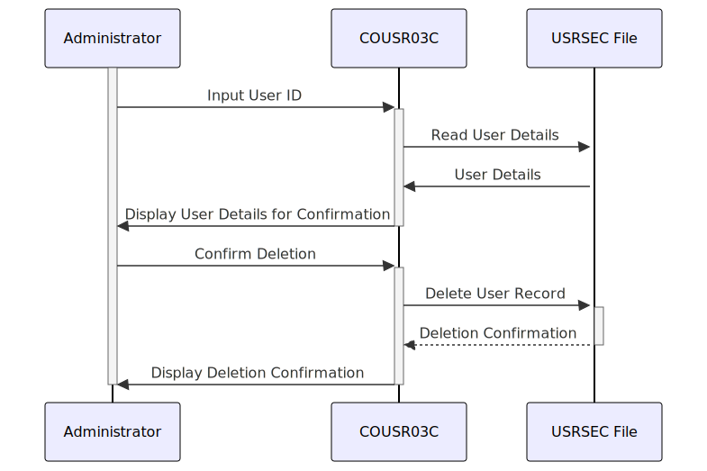

Gerado em: 1 de outubro de 2024
CardDemo Gerenciamento de Usuários - Exclusão de Usuário
Descrição Resumida
Esta especificação detalha a função “Exclusão de Usuário” dentro da aplicação CardDemo. Esta função permite que usuários autorizados (administradores) removam contas de usuário com segurança.
Histórias de Usuário
Como administrador do sistema, preciso ser capaz de excluir contas de usuário para poder gerenciar o acesso do usuário e garantir a segurança do sistema.
Épico Relacionado:
6 - Gerenciamento de Usuários e Segurança
Requisitos Funcionais
- Identificação do Usuário: O sistema deve permitir que um administrador insira um ID de usuário para identificar a conta a ser excluída.
- Verificação do Usuário: O sistema deve recuperar e exibir os detalhes do usuário para confirmação antes da exclusão.
- Confirmação de Exclusão: O sistema deve exigir confirmação explícita do administrador antes de excluir a conta do usuário.
- Execução da Exclusão: Após a confirmação, o sistema deve remover o registro do usuário do arquivo USRSEC.
- Comunicação de Resultados: O sistema deve exibir uma mensagem de sucesso após a exclusão bem-sucedida ou uma mensagem de erro se a exclusão falhar.
Regras de Negócio:
- Somente administradores autenticados com permissões apropriadas podem excluir contas de usuário.
- O sistema deve verificar o ID do usuário antes da exclusão para evitar a exclusão acidental da conta errada.
- Todas as ações de exclusão de usuário devem ser registradas para fins de auditoria.
Requisitos Não Funcionais
- Segurança: Somente pessoal autorizado deve poder excluir contas de usuário. O sistema deve empregar mecanismos robustos de autenticação e autorização para garantir que somente usuários autorizados possam acessar e executar esta função.
- Integridade de Dados: O sistema deve garantir que a conta de usuário correta seja excluída. Ele deve fornecer etapas de confirmação claras ao administrador antes de remover permanentemente quaisquer dados.
- Auditabilidade: Todas as ações de exclusão de usuário, incluindo o usuário que iniciou a exclusão, a data e hora da ação e o ID de usuário da conta excluída, devem ser registradas para fins de auditoria e rastreamento.
Critérios de Aceite
- Um administrador autenticado deve ser capaz de excluir uma conta de usuário existente com sucesso.
- O sistema deve exibir uma mensagem de confirmação após a exclusão bem-sucedida do usuário.
- O sistema deve lidar com IDs de usuário inválidos normalmente e exibir uma mensagem de erro apropriada.
- O sistema deve registrar todas as ações de exclusão de usuário para fins de auditoria.
Melhorias de Código
- Implementar consultas parametrizadas para evitar vulnerabilidades de injeção de SQL ao acessar o arquivo USRSEC.
- Adicionar tratamento de erros para operações de arquivo para lidar normalmente com erros potenciais durante o acesso ao arquivo.
- Usar uma estrutura de registro para fornecer registros detalhados para facilitar a solução de problemas e o monitoramento.
Melhorias de Segurança
- Implementar políticas de senha forte para contas de administrador.
- Habilitar a autenticação de dois fatores para contas de administrador para evitar acesso não autorizado.
- Revisar e atualizar regularmente as listas de controle de acesso para funções de gerenciamento de usuários.
Diagrama Conceitual

–Made by “Smart Engineering” (by Compass.UOL)–